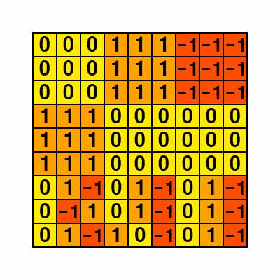
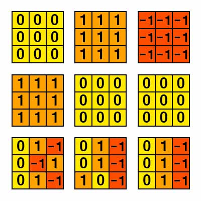
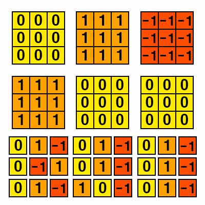

백준 1780. 종이의 개수
- https://www.acmicpc.net/problem/1780
-
문제 :
N×N크기의 행렬로 표현되는 종이가 있다. 종이의 각 칸에는 -1, 0, 1 중 하나가 저장되어 있다. 우리는 이 행렬을 다음과 같은 규칙에 따라 적절한 크기로 자르려고 한다.
1.만약 종이가 모두 같은 수로 되어 있다면 이 종이를 그대로 사용한다.
2.(1)이 아닌 경우에는 종이를 같은 크기의 종이 9개로 자르고, 각각의 잘린 종이에 대해서 (1)의 과정을 반복한다.
이와 같이 종이를 잘랐을 때, -1로만 채워진 종이의 개수, 0으로만 채워진 종이의 개수, 1로만 채워진 종이의 개수를 구해내는 프로그램을 작성하시오. -
입력 :
첫째 줄에 N(1 ≤ N ≤ 37, N은 3k 꼴)이 주어진다. 다음 N개의 줄에는 N개의 정수로 행렬이 주어진다. -
출력 :
첫째 줄에 -1로만 채워진 종이의 개수를, 둘째 줄에 0으로만 채워진 종이의 개수를, 셋째 줄에 1로만 채워진 종이의 개수를 출력한다. -
풀이 :
색종이를 같은 색으로 3k 꼴로 자르고 각각의 색종이의 개수를 출력하면 되는 문제이다.

색종이 데이터를 입력받으면 색종이의 크기만큼 모두 같은 색인지 확인한다.

모두 같은 색일 경우 그대로 두고 모두 같은 색이 아닐 경우 9등분으로 같은 크기로 자른다. 예제 입력의 경우 모두 같은 색이 아니므로 9등분으로 자른다.

9등분한 색종이를 마찬가지로 동일한 조건으로 자르거나 그대로 둔다.
3k의 최소는 30 = 1이므로 최소 크기까지 자른다.
모든 작업이 완료되면 색마다 나온 개수만큼 답을 출력한다.